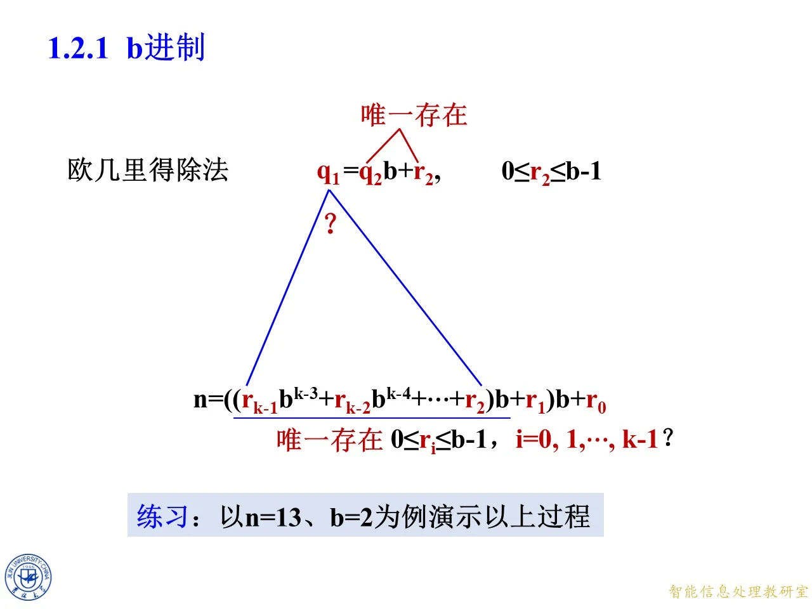
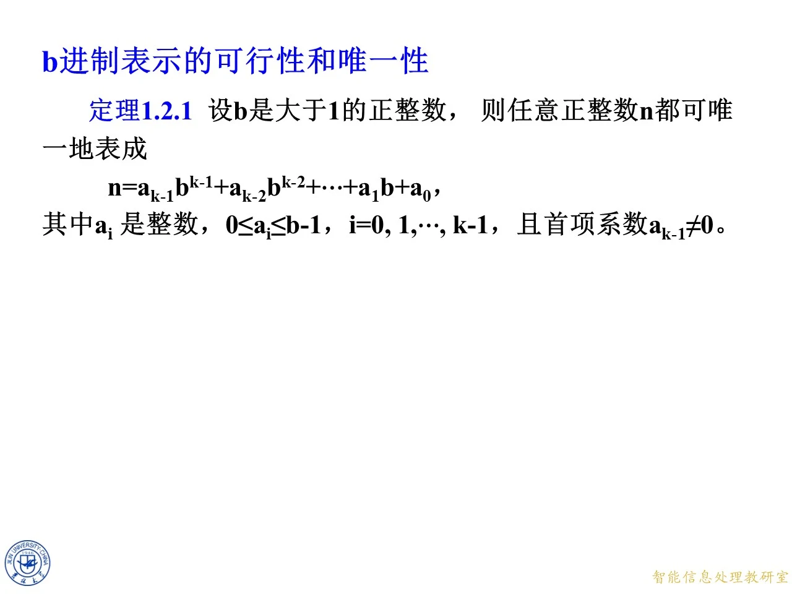

本主题讲整数的 b 进制表示：任何一个正整数都能用固定的底数 b 写成各位数字的多项式形式，而且这种写法唯一。它是第一章 1.2 节「整数的表示」的第一部分（第二部分计算复杂性不讲），证明完全建立在 1.1 节的欧几里得除法之上，也为后面 1.3 节广义欧几里得除法中「反复做除法」的技术提供了第一个示范。
从一次除法到整串数码
◆ p.265-266 ｜1.2 整数的表示・目录
本页是 1.2 节的目录页，列出两小节：1.2.1 b进制（课件注明「b进制运算不讲」，即只讲表示法本身，不讲 b 进制下的加减乘除规则）、1.2.2 计算复杂性。本课只覆盖 1.2.1。
◆ p.267-269 ｜出发点：欧几里得除法
一切从 1.1 节的欧几里得除法出发：给定正整数 n n n 1 1 1 b b b q q q r r r
n = q b + r , 0 ≤ r ≤ b − 1 n=qb+r,\qquad 0\le r\le b-1 n = q b + r , 0 ≤ r ≤ b − 1
「唯一存在」是课件特意用红色标注的重点：q q q r r r n n n b b b b b b
◆ p.270-271 ｜提出目标
页面在除法等式下画出向下的箭头，并摆出两个数：n n n b b b n n n b b b b b b
◆ p.272-274 ｜目标表达式
箭头下方给出目标：要把 n n n
n = r k − 1 b k − 1 + r k − 2 b k − 2 + ⋯ + r 2 b 2 + r 1 b + r 0 n=r_{k-1}b^{k-1}+r_{k-2}b^{k-2}+\cdots+r_2b^2+r_1b+r_0 n = r k − 1 b k − 1 + r k − 2 b k − 2 + ⋯ + r 2 b 2 + r 1 b + r 0
课件紧接着问：这样的系数是否也「唯一存在」，满足 0 ≤ r i ≤ b − 1 0\le r_i\le b-1 0 ≤ r i ≤ b − 1 i = 0 , 1 , ⋯ , k − 1 i=0,1,\cdots,k-1 i = 0 , 1 , ⋯ , k − 1
拓展 （课件外补充）：把 b i b^{i} b i r i r_i r i n n n b b b i i i b = 10 b=10 b = 10 b = 2 , 8 , 16 b=2,8,16 b = 2 , 8 , 16 r i r_i r i a i a_i a i
存在性证明：逐位提取余数
◆ p.275 ｜证明策略总览
页面把「n n n n n n r k − 1 b k − 1 + ⋯ + r 0 r_{k-1}b^{k-1}+\cdots+r_0 r k − 1 b k − 1 + ⋯ + r 0 n n n b b b
◆ p.276-279 ｜第一步除法：取出个位 r 0 r_0 r 0
对 n n n n n n
n = q 0 b + r 0 , 0 ≤ r 0 ≤ b − 1 n=q_0b+r_0,\qquad 0\le r_0\le b-1 n = q 0 b + r 0 , 0 ≤ r 0 ≤ b − 1
与目标表达式对照：目标式除以 b b b r 0 r_0 r 0 r i b i r_ib^i r i b i i ≥ 1 i\ge1 i ≥ 1 b b b r 0 r_0 r 0 q 0 q_0 q 0 r 0 r_0 r 0 r k − 1 b k − 2 + ⋯ + r 2 b + r 1 r_{k-1}b^{k-2}+\cdots+r_2b+r_1 r k − 1 b k − 2 + ⋯ + r 2 b + r 1 ( r k − 1 b k − 2 + ⋯ + r 2 b + r 1 ) b + r 0 (r_{k-1}b^{k-2}+\cdots+r_2b+r_1)b+r_0 ( r k − 1 b k − 2 + ⋯ + r 2 b + r 1 ) b + r 0 r 0 r_0 r 0
◆ p.280-281 ｜第二步除法：取出下一位 r 1 r_1 r 1
现在对商 q 0 q_0 q 0
q 0 = q 1 b + r 1 , 0 ≤ r 1 ≤ b − 1 q_0=q_1b+r_1,\qquad 0\le r_1\le b-1 q 0 = q 1 b + r 1 , 0 ≤ r 1 ≤ b − 1
代入前一步的等式，n = ( q 1 b + r 1 ) b + r 0 = q 1 b 2 + r 1 b + r 0 n=(q_1b+r_1)b+r_0=q_1b^2+r_1b+r_0 n = ( q 1 b + r 1 ) b + r 0 = q 1 b 2 + r 1 b + r 0 b 1 b^1 b 1 r 1 r_1 r 1 q 1 q_1 q 1 ( r k − 1 b k − 3 + ⋯ + r 2 ) b (r_{k-1}b^{k-3}+\cdots+r_2)b ( r k − 1 b k − 3 + ⋯ + r 2 ) b
◆ p.282-287 ｜逐位继续：q 1 = q 2 b + r 2 q_1=q_2b+r_2 q 1 = q 2 b + r 2
同样的操作再做一次：
q 1 = q 2 b + r 2 , 0 ≤ r 2 ≤ b − 1 q_1=q_2b+r_2,\qquad 0\le r_2\le b-1 q 1 = q 2 b + r 2 , 0 ≤ r 2 ≤ b − 1
代入得 n = q 2 b 3 + r 2 b 2 + r 1 b + r 0 n=q_2b^3+r_2b^2+r_1b+r_0 n = q 2 b 3 + r 2 b 2 + r 1 b + r 0 ( ( r k − 1 b k − 3 + r k − 2 b k − 4 + ⋯ + r 2 ) b + r 1 ) b + r 0 ((r_{k-1}b^{k-3}+r_{k-2}b^{k-4}+\cdots+r_2)b+r_1)b+r_0 (( r k − 1 b k − 3 + r k − 2 b k − 4 + ⋯ + r 2 ) b + r 1 ) b + r 0 b b b i i i n n n q i − 1 b i + r i − 1 b i − 1 + ⋯ + r 1 b + r 0 q_{i-1}b^i+r_{i-1}b^{i-1}+\cdots+r_1b+r_0 q i − 1 b i + r i − 1 b i − 1 + ⋯ + r 1 b + r 0
◆ p.288-291 ｜提取过程的结束条件与练习
这条除法链会不会永不停止？不会。每一步的商满足 q i = q i + 1 b + r i + 1 q_{i}=q_{i+1}b+r_{i+1} q i = q i + 1 b + r i + 1 0 ≤ r i + 1 ≤ b − 1 0\le r_{i+1}\le b-1 0 ≤ r i + 1 ≤ b − 1 q i + 1 ≤ q i / b q_{i+1}\le q_i/b q i + 1 ≤ q i / b q i < b q_i<b q i < b 0 0 0 n = 13 n=13 n = 13 b = 2 b=2 b = 2
拓展 （课件外补充）：这个「反复除以 b b b r 0 r_0 r 0 b b b

课件原图 · 9月9日授课 · 第 291 页 查看前后已收录原页 → 练习：把 13 写成二进制
◆ p.292-302 ｜练习 n = 13 n=13 n = 13 b = 2 b=2 b = 2
课件先从构造角度演示。对 n = 13 n=13 n = 13 b = 2 b=2 b = 2
13 = 6 × 2 + 1 13=6\times2+1 13 = 6 × 2 + 1 a 0 = 1 a_0=1 a 0 = 1 6 = 3 × 2 + 0 6=3\times2+0 6 = 3 × 2 + 0 a 1 = 0 a_1=0 a 1 = 0 3 = 1 × 2 + 1 3=1\times2+1 3 = 1 × 2 + 1 a 2 = 1 a_2=1 a 2 = 1 1 = 0 × 2 + 1 1=0\times2+1 1 = 0 × 2 + 1 a 3 = 1 a_3=1 a 3 = 1 0 0 0
从最后一步往前读，数码依次是 a 3 , a 2 , a 1 , a 0 = 1 , 1 , 0 , 1 a_3,a_2,a_1,a_0=1,1,0,1 a 3 , a 2 , a 1 , a 0 = 1 , 1 , 0 , 1 13 = ( 1101 ) 2 13=(1101)_2 13 = ( 1101 ) 2 bin(13) 为 0b1101，且 8 + 4 + 0 + 1 = 13 8+4+0+1=13 8 + 4 + 0 + 1 = 13 13 = 1 × 2 3 + 1 × 2 2 + 0 × 2 + 1 13=1\times2^3+1\times2^2+0\times2+1 13 = 1 × 2 3 + 1 × 2 2 + 0 × 2 + 1 13 > 6 > 3 > 1 > 0 13>6>3>1>0 13 > 6 > 3 > 1 > 0
◆ p.303-309 ｜练习续：商链严格下降到零
页面把一般论证补齐：所有不完全商 q i q_i q i ≥ 0 \ge 0 ≥ 0
n > q 0 > q 1 > q 2 > q 3 > ⋯ > q k − 2 > q k − 1 ≥ 0 n>q_0>q_1>q_2>q_3>\cdots>q_{k-2}>q_{k-1}\ge 0 n > q 0 > q 1 > q 2 > q 3 > ⋯ > q k − 2 > q k − 1 ≥ 0
（n > q 0 n>q_0 n > q 0 q 0 = n div b ≤ n / 2 < n q_0=n\operatorname{div}b\le n/2<n q 0 = n div b ≤ n /2 < n q k − 1 = 0 q_{k-1}=0 q k − 1 = 0 q k − 1 = 0 q_{k-1}=0 q k − 1 = 0 q k − 2 = q k − 1 b + a k − 1 = a k − 1 q_{k-2}=q_{k-1}b+a_{k-1}=a_{k-1} q k − 2 = q k − 1 b + a k − 1 = a k − 1 a k − 1 a_{k-1} a k − 1 13 13 13 a 3 = 1 a_3=1 a 3 = 1
◆ p.310-314 ｜练习续：从最后一个等式回代
接下来从最后一个等式开始、依次代入前一个等式（图中红色箭头指向上方，表示代入方向朝前）：a k − 1 = q k − 2 a_{k-1}=q_{k-2} a k − 1 = q k − 2 q k − 3 = q k − 2 b + a k − 2 q_{k-3}=q_{k-2}b+a_{k-2} q k − 3 = q k − 2 b + a k − 2 n = q 0 b + a 0 n=q_0b+a_0 n = q 0 b + a 0
n = a k − 1 b k − 1 + a k − 2 b k − 2 + ⋯ + a 1 b + a 0 n=a_{k-1}b^{k-1}+a_{k-2}b^{k-2}+\cdots+a_1b+a_0 n = a k − 1 b k − 1 + a k − 2 b k − 2 + ⋯ + a 1 b + a 0
对 13 13 13 1 = a 3 1=a_3 1 = a 3 3 = 1 × 2 + 1 ⇒ a 2 = 1 3=1\times2+1\Rightarrow a_2=1 3 = 1 × 2 + 1 ⇒ a 2 = 1 6 = 3 × 2 + 0 ⇒ a 1 = 0 6=3\times2+0\Rightarrow a_1=0 6 = 3 × 2 + 0 ⇒ a 1 = 0 13 = 6 × 2 + 1 ⇒ a 0 = 1 13=6\times2+1\Rightarrow a_0=1 13 = 6 × 2 + 1 ⇒ a 0 = 1 13 = 1 × 2 3 + 1 × 2 2 + 0 × 2 + 1 13=1\times2^3+1\times2^2+0\times2+1 13 = 1 × 2 3 + 1 × 2 2 + 0 × 2 + 1
唯一性与定理 1.2.1
◆ p.315-318 ｜定理 1.2.1（b 进制表示的存在性与唯一性）
把前面全部工作收拢为定理 1.2.1：设 b b b 1 1 1 n n n
n = a k − 1 b k − 1 + a k − 2 b k − 2 + ⋯ + a 1 b + a 0 n=a_{k-1}b^{k-1}+a_{k-2}b^{k-2}+\cdots+a_1b+a_0 n = a k − 1 b k − 1 + a k − 2 b k − 2 + ⋯ + a 1 b + a 0
其中 a i a_i a i 0 ≤ a i ≤ b − 1 0\le a_i\le b-1 0 ≤ a i ≤ b − 1 i = 0 , 1 , ⋯ , k − 1 i=0,1,\cdots,k-1 i = 0 , 1 , ⋯ , k − 1 a k − 1 ≠ 0 a_{k-1}\ne0 a k − 1 = 0 b b b b b b n n n a i a_i a i a i ′ a_i' a i ′
( a 0 − a 0 ′ ) + ( a 1 − a 1 ′ ) b + ⋯ + ( a k − 1 − a k − 1 ′ ) b k − 1 = 0 (a_0-a_0')+(a_1-a_1')b+\cdots+(a_{k-1}-a_{k-1}')b^{k-1}=0 ( a 0 − a 0 ′ ) + ( a 1 − a 1 ′ ) b + ⋯ + ( a k − 1 − a k − 1 ′ ) b k − 1 = 0
对 b b b b b b b ∣ ( a 0 − a 0 ′ ) b\mid(a_0-a_0') b ∣ ( a 0 − a 0 ′ ) ∣ a 0 − a 0 ′ ∣ ≤ b − 1 < b |a_0-a_0'|\le b-1<b ∣ a 0 − a 0 ′ ∣ ≤ b − 1 < b a 0 = a 0 ′ a_0=a_0' a 0 = a 0 ′ b b b a i = a i ′ a_i=a_i' a i = a i ′ 0 ≤ a i < b 0\le a_i<b 0 ≤ a i < b
拓展 （课件外补充）：三点提醒。其一，条件 b > 1 b>1 b > 1 b = 1 b=1 b = 1 b i b^i b i [ 0 , 0 ] [0,0] [ 0 , 0 ] a k − 1 ≠ 0 a_{k-1}\ne0 a k − 1 = 0 ( 13 ) 10 = ( 01101 ) 2 (13)_{10}=(01101)_2 ( 13 ) 10 = ( 01101 ) 2 n = 0 n=0 n = 0 b b b int('1101',2)=13）正确性的数学保证；同一个思想在 1.5 节整数分解、1.6 节算术基本定理中会以「唯一分解」的更大面目重现。
◆ p.319-320 ｜章首页（过渡页）
p.319 为第一章封面、p.320 为第一章目录（1.1 整除的概念 欧几里得除法；1.2 整数的表示；1.3 最大公因数与广义欧几里得除法；1.4 整除的进一步性质及最小公倍数；1.5 整数分解；1.6 素数的算术基本定理；1.7 素数定理）。两页均为过渡页，无实质数学内容，本课到此结束。

课件原图 · 9月9日授课 · 第 318 页 查看前后已收录原页 →